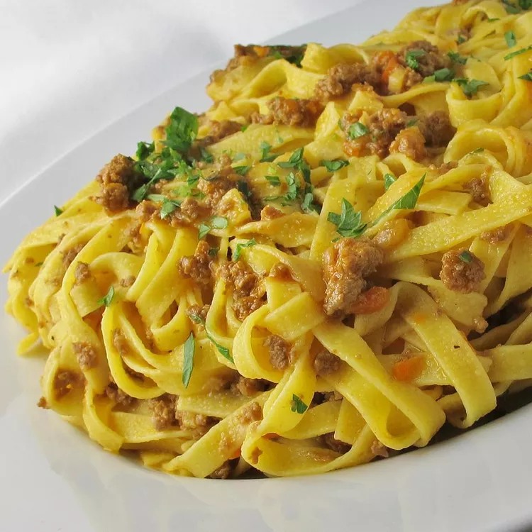

Ragù alla Bolognese

Description
This North Italian recipe comes from Bologna, Italy. One unusual characteristic of this Bolognese sauce is that it has no garlic — but there is a hint of ground nutmeg. Serve over hot, cooked pasta.
Ingredients
- 4 ounces pancetta, diced
- 2 tablespoons olive oil
- 12 ounces lean ground pork
- ¼ pound lean ground beef
- ½ cup white wine
- 2 cups beef stock
- 2 tablespoons tomato paste
- ½ pound chicken liver
- 1 cup heavy whipping cream
- 1 teaspoon salt, or to taste
- ½ teaspoon freshly ground black pepper, or to taste
- 1 pinch ground nutmeg
Steps
- In a large skillet, melt 2 tablespoons butter over medium heat. Add onion, carrot, celery, and pancetta; cook, stirring often, until lightly browned, about 10 minutes. Transfer to a heavy large saucepan.
- In the same skillet, heat olive oil over medium heat. Cook and stir ground pork and beef in hot oil until crumbly and browned. Pour in wine, increase heat to medium-high, and boil briskly, stirring constantly, until almost all of the liquid has evaporated. Transfer ground meat mixture to the saucepan with pancetta and vegetables. Set the skillet aside.
- Stir beef stock and tomato paste into the saucepan; bring to a boil. Reduce heat and simmer, partially covered, for 45 minutes, stirring occasionally.
- Meanwhile, melt remaining 2 tablespoons butter in the skillet over medium-high heat. Sauté chicken livers in hot butter until firm and lightly browned, 3 to 4 minutes. Remove livers from the skillet and dice. Set aside and add to sauce 10 minutes before it is done.
- A few minutes before serving, stir in cream and cook until sauce is heated through. Season with salt, pepper, and nutmeg.